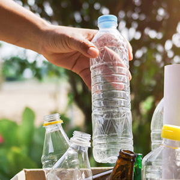
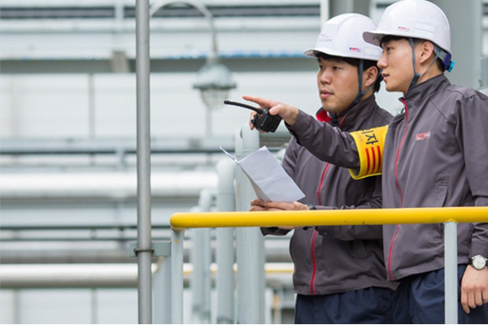

home > 상생경영 > 안전환경보건
안전환경보건
안전환경보건경영 소개
금호석유화학은 "환경은 사업에 우선한다"는 경영철학을 바탕으로 자율적인 안전환경보건경영시스템을 구축하여 시행하고 있으며, 주기적인 점검 및 인증을 통해 지속적으로 개선해 나가고 있습니다. 제품 생산에서 폐기물 처리에 이르기까지 엄격한 환경관리를 실천하고, 사람과 설비의 안전을 위한 지속적 개선과 예방을 통해 안전한 사업장 조성 및 국내외 안전보건 관련 법규, 협약 등을 준수하도록 안전환경보건경영에 힘쓰고 있습니다. "사회와 회사에 대한 책임감"이라는 핵심가치를 바탕으로 기본과 원칙에 충실하고, 안전환경보건을 최우선으로 실천하여 지속적인 기업발전과 사회적 책임을 완수하는 기업이 되겠습니다.
안전환경보건경영 비전 및 방침
- 
-
- 친환경제품
- 친환경 원자재 도입
- 친환경 신소재 개발
- 지속적인 공정개선
-
- 에너지 기후 보호
- 폐열회수 및 고효율 에너지기기 도입
- 기후변화 대응 활동
- 에너지경영시스템 구축
-
- 국내외 환경·안전·보건
선도적 역할 - EU REACH
- RoHS
- GHS 대응 활동
- 국내외 환경·안전·보건
-
- 시스템 실행력 강화
- 사업장 체질화(RC활동)
- 사업장 환경·안전·보건인증관리
- 환경성과 지표관리를 통한 성과 개선
- 해외사업장, 협력회사 관리체계 확립
- 안전환경보건방침
금호석유화학은 인류와 환경이 조화롭게 공존하는 녹색 화학을 실천하기 위해 사회와 회사에 대한 책임있는 자세로 다음과 같이 노력합니다.
- 1. 환경 보호 및 무재해 사업장의 구현은 회사 전 임직원들의 기본적인 임무로, 모든 업무에 안전환경보건을 최우선 고려하고, 위험성을 최소화한다.
- 2. 안전환경보건 위험성을 최소화하고 개선하기 위한 목표와 추진계획을 수립하여 실행하고, 지속적인 안전환경보건 개선 활동을 전개한다.
- 3. 회사의 모든 기반 시설, 연구개발 활동 및 생산 활동 등은 국가 및 지방자치 단체의 안전환경보건관련 법규와 요구사항을 준수한다.
- 4. 안전환경보건과 관련된 프로세스를 준수하고, 관련 교육 훈련, 의식 향상, 기술 개발 등 안전환경보건에 친화적인 경영시스템을 구축하고 실행한다.
- 5. 안전환경보건 방침과 목표 및 성과를 근로자와 이해관계자들에게 공개하여 투명성을 보장하고, 경영에 안전환경보건을 최우선 하려는 의지와 실천으로 사회적 책임을 다한다.
- 품질방침
금호석유화학은 최고의 품질과 최상의 서비스를 통한 고객만족 극대화를 위하여 다음과 같이 노력합니다.
- 1. 기본과 원칙에 충실하여 정직하고 안전한 제품을 생산하도록 한다.
- 2. 품질경영시스템을 수립하고 이를 이행하여, 품질경쟁력을 강화한다.
- 3. 안정적이고 효율적인 품질관리를 위하여 품질목표를 설정하고 이를 성실히 이행한다.
- 4. 품질경영시스템의 주기적인 내,외부 심사를 통해 지속적인 품질향상 및 개선을 도모한다.
- 5. 품질경영에 대한 지속적인 교육훈련과 의사소통을 통해 임직원의 의식 제고에 노력한다.
- 6. 예측 가능한 품질경영체제 구축을 통하여 선진 품질문화를 정착시킨다.
안전환경보건경영 영향 활동
-

- 1. 안전환경교류회 및 교차안전진단 실시
- 금호석유화학은 안전경영을 위하여 사업장간 안전환경교류회 및 교차안전진단을 실시하고, 우수사례 벤치마킹,안전관리 예방활동 강화를 지속적으로 실시해 오고 있습니다.
-
- 2. 안전환경통합회의 실시
- 금호석유화학은 최소 연 1회 이상 안전환경보건경영에 대한 전반적인 현황을 보고함으로써 환경안전 활동사례 및 관리기법의 정보를 교환하고 안전환경보건경영의 문제점이나 위해 요소를 찾아내어 추적, 관리하는 등 최고경영층의 안전환경보건에 대한 적극적인 관심과 확고한 의지를 반영하고 있습니다.
-
- 3. 환경안전보건(EHS) 통합관리시스템 구축
- EHS 통합관리시스템은 전세계적으로 강화되고 있는 환경, 안전, 보건 기준에 적극적으로 대응하기 위한 SAP 기반 IT 솔루션으로 사업장 작업환경 및 작업안전 등 관리를 위한 환경안전보건 관리 / 유해 화학 물질 유통량 산정 및 유통 관리를 위한 화학물질 관리 / 온실가스 감축 을 위한 온실가스 인벤토리 관리 등 부문으로 구성되어 있습니다.
-
- 4. 안전환경보건경영시스템(내외부심사)
- ISO14001 환경경영시스템과 ISO 45001 안전보건경영시스템의 유효성 및 지속적인 유지관리를 위해 내/외부 심사를 연간 1회 이상 실시해오고 있으며, 이를 통해 당사의 안전환경보건 경영시스템을 보완하고 더욱 발전된 시스템으로 구축하고 있습니다.
환경경영 추진 전략
기후변화를 중심으로 하는 급격한 환경변화에 대응하기 위하여 국가들은 강력한 규제와 대응방안을 마련하고 있습니다. 특히, 석유화학 산업에서는 에너지 전환과 순환경제라는 큰 흐름이 발생하고 있습니다. 금호석유화학은 글로벌 기후변화 위기 극복을 위해 동참하고, 석유화학 산업의 세계적 흐름에 발 맞추어 다양한 노력을 기울이고 있습니다. ESG운영체계와 ESG위원회를 수립하였으며, 공장별 환경목표를 관리하고 있고, CDP, RC, REACH 등 다양한 규제 및 인증에 대응하며 환경정보의 투명성을 제고하였습니다.
-
- 온실 가스 저감 및
친환경 에너지 적용 확대 - CCU 도입
- 바이오매스 활용
- K-RE100 추진
- 온실 가스 저감 및
-
- 폐기물
저감 - 친환경 수처리
- 친환경 원료
- 자원 재활용
- 폐기물
-
- 사업장 안전 환경 강화 체계
구조적 개선 - EHS 시스템 최적화
- 오염 사고 방지 체계
- 작업 안전 환경 개선 체계
- 사업장 안전 환경 강화 체계